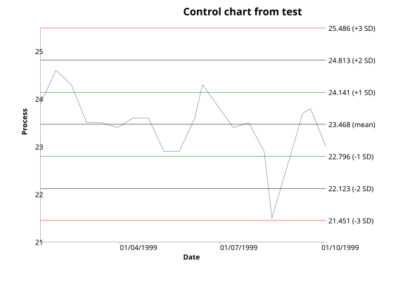
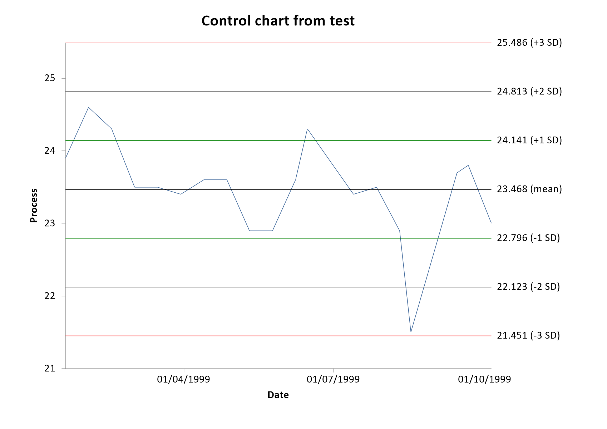

Menu location: Graphics_Control.
This plots the values of a process indicator over time (or some other sequence variable), and shows the variation within specified bands.
The bands show on a control plots are often called control limits and warning limits, denoting the type of action to be taken if values lie beyond them. A common application is the monitoring of laboratory processes, in which the warning limits are usually taken as two standard deviations (SD) either side of the mean and the control limits are three standard deviations either side of the mean (Mortimer, 1994, 1999).
StatsDirect offers the following options for control plot bands:
If your time/sequence data are dates then the x axis is labelled at regular calendar intervals chosen to suit the span of the data (minutes, hours, days, weeks, months, quarters, years or decades), using the short date or time format that is set in your Windows installation.

